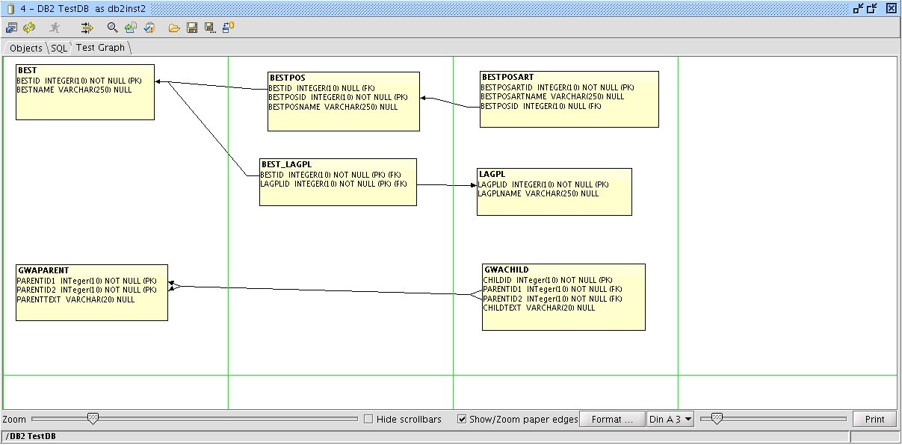

Graph 1.0 - Gerd Wagner
The Graph plugin allows to create charts of tables and foreign-key relationships.
To create a graph select the tables in the Object tree and click the 'Add to graph' item in the right mouse menu. Right mouse click tables, constraints as well as the background to find out what functions the Graph provides. To open a table a foreign key points to just double click on the foreign key column. The plugin supports browsing through the table structure.
To distribute and print a graph to several sheets of paper click the 'Zoom/Print' item in the backgrounds right mouse menu. The control panel at the bottom of the Graph enables you to scale the chart as well as the paper edges.

Note:
You can have several Graph tabs and you may free to name and save them.
The Graph plugin works best if you use the SQL Scripts plugin too. The SQL Scripts is also available at www.squirrelsql.org.